Lab 03 · Fondamentaux
Bipartition initiale
Les méthodes de raffinement comme Kernighan–Lin et FM ne font qu'améliorer une partition : il leur en faut une valide pour démarrer. Ce lab construit cette première partition de trois façons (aléatoire, gloutonne et par croissance), indique sa taille de coupe et son équilibre, et montre que le départ décide du travail qui reste à faire.
Cinq courtes parties : la suivante démarre toute seule. Choisissez une partie ou une vitesse ; elle s'applique à toutes les parties.
Diapositives
Les 30 diapositives de la vidéo. Cliquez sur l'une d'elles pour l'afficher en grand, ou téléchargez la présentation complète.

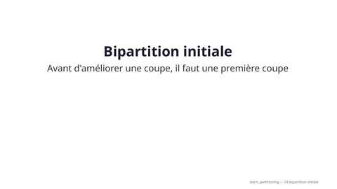

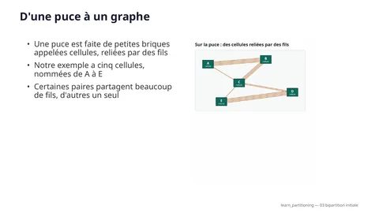

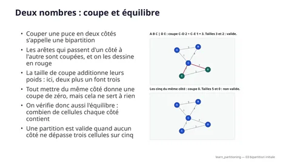

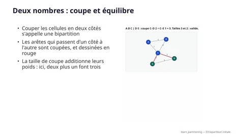

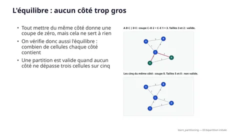


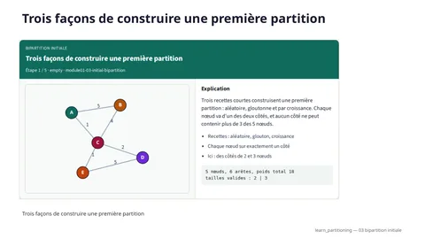

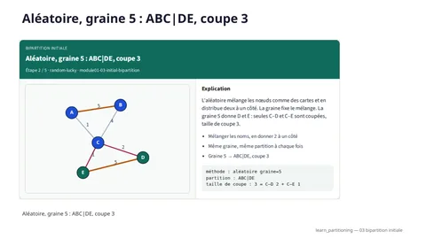

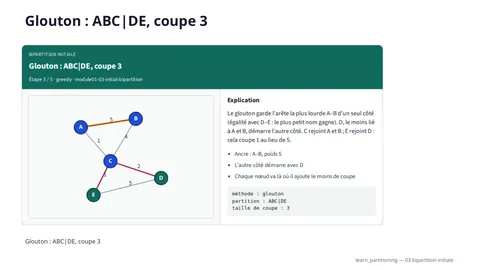

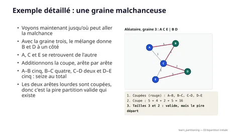

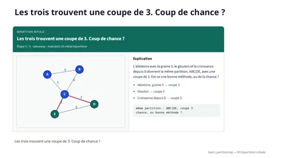


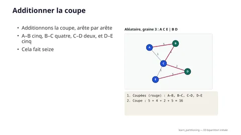

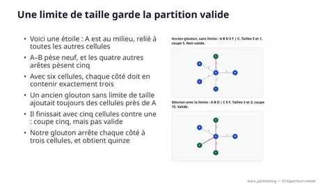

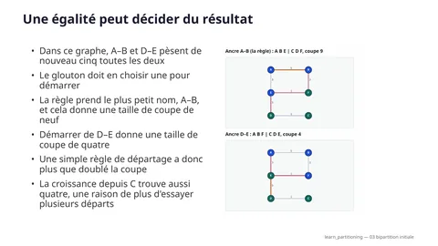

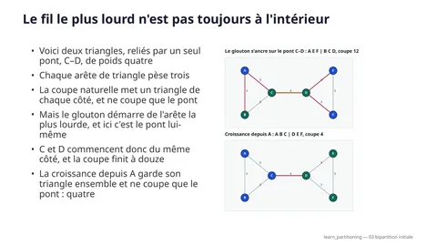


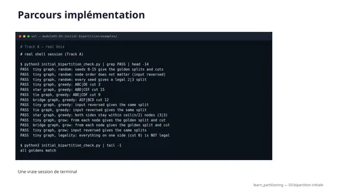


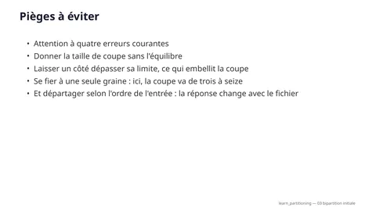


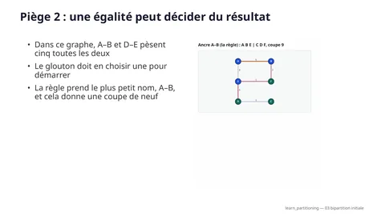

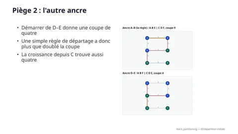

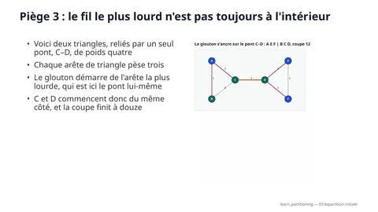

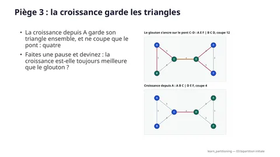


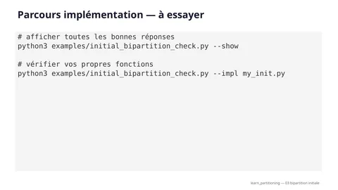

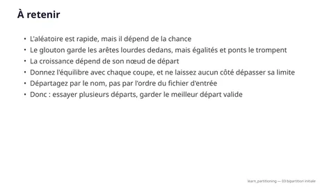

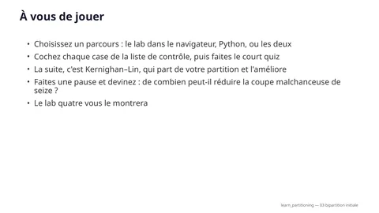
Pas à pas
Les cinq images de la vidéo qui construisent une première partition sur le petit graphe, avec la légende de chaque étape.

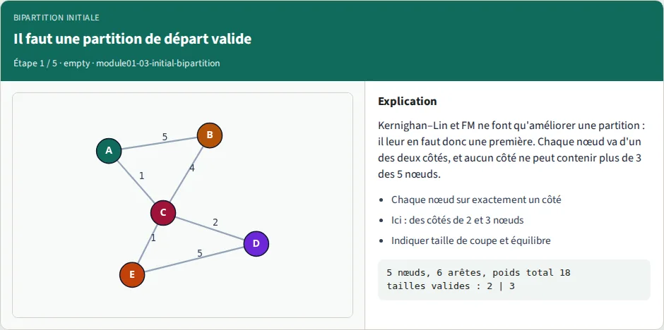
- Recettes : aléatoire, glouton, croissance
- Chaque nœud sur exactement un côté
- Ici : des côtés de 2 et 3 nœuds

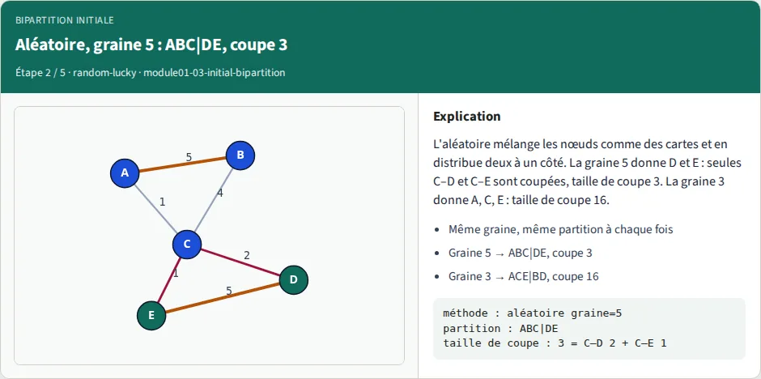
- Mélanger les noms, en donner 2 à un côté
- Même graine, même partition à chaque fois
- Graine 5 → ABC|DE, coupe 3

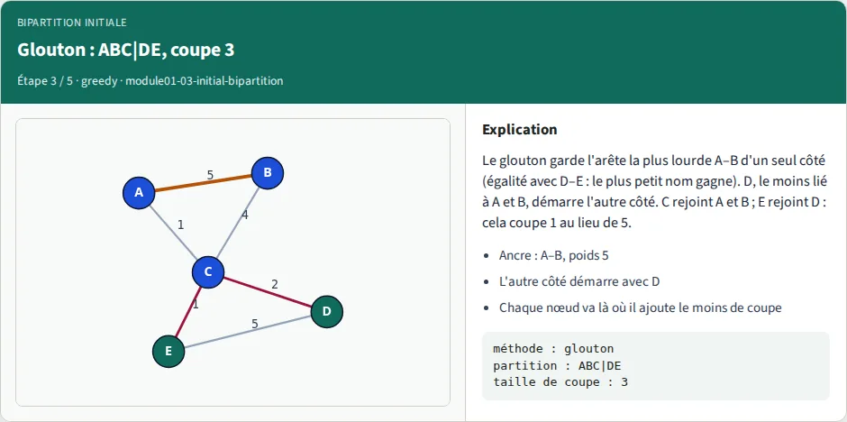
- Ancre : A–B, poids 5
- L'autre côté démarre avec D
- Chaque nœud va là où il ajoute le moins de coupe

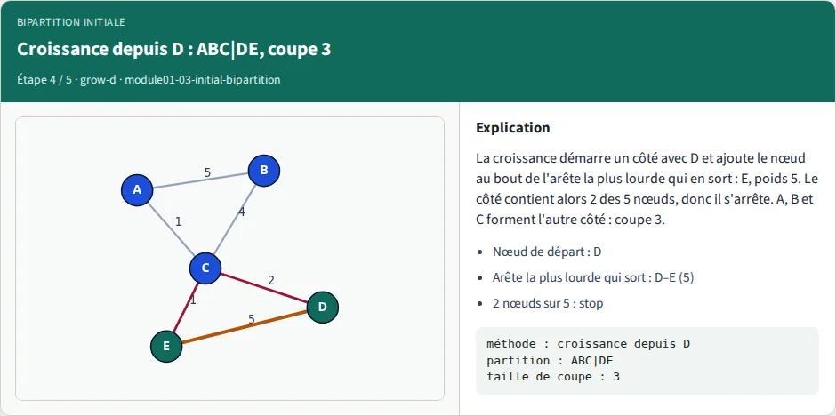
- Nœud de départ : D
- Arête la plus lourde qui sort : D–E (5)
- 2 nœuds sur 5 : stop

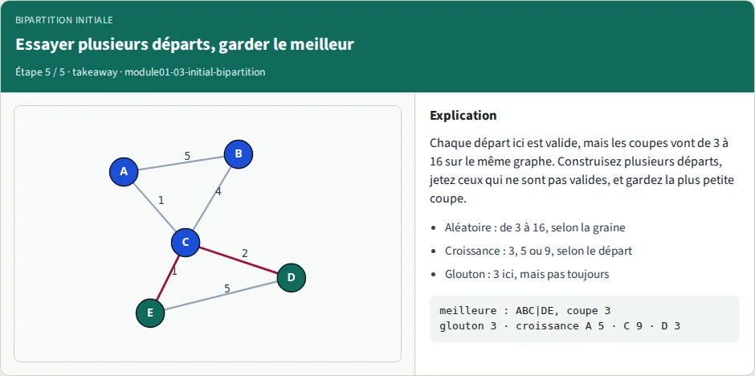
- Aléatoire, graine 5 → coupe 3
- Glouton → coupe 3
- Croissance depuis D → coupe 3
Lab interactif
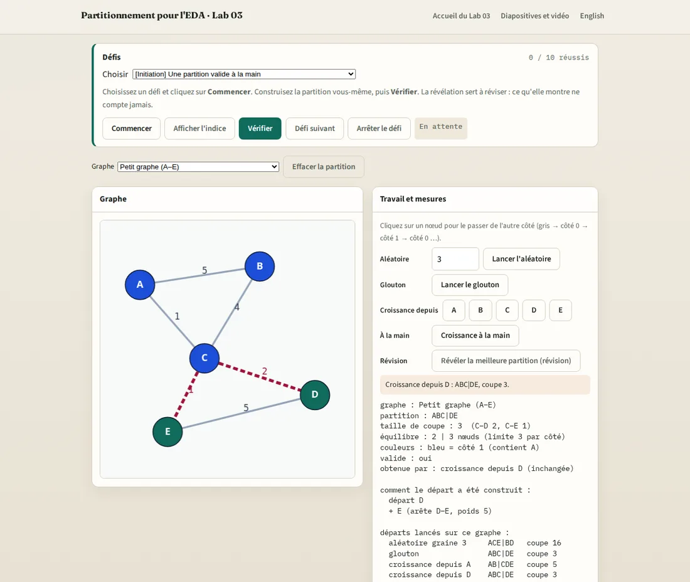
Construisez vous-même les partitions, directement dans le navigateur :
- Cliquez sur les nœuds pour les passer d'un côté à l'autre et observez la taille de coupe et l'équilibre.
- Lancez l'aléatoire (avec une graine de votre choix), le glouton, et la croissance depuis n'importe quel nœud, et comparez leurs coupes dans un journal.
- Faites grandir un côté à la main, dans l'ordre de la règle, à travers une égalité.
- Quatre graphes (petit, étoile, égalité, pont), chacun montrant une idée qui change un résultat.
Dix défis, de l'initiation à l'approfondissement, vérifient la partition que vous avez construite, pas le bouton sur lequel vous avez cliqué. Un départ que vous modifiez ne compte plus comme ce départ, et la révélation de révision ne compte jamais.
Implémentation (parcours A)
Écrivez vous-même les trois fonctions de départ (aléatoire, glouton, croissance) et vérifiez-les avec les résultats de référence. Les commandes ci-dessous se lancent dans le dépôt du cours, depuis courses/learn_partitioning/module01-03-initial-bipartition/.
tiny_graph.jsonPetit graphe (la référence principale)
star_graph.jsonGraphe en étoile : la limite de taille décide
tie_graph.jsonGraphe à égalité : le départage décide
bridge_graph.jsonGraphe pont : le fil le plus lourd n'est pas à l'intérieur
initial_bipartition_check.pyVérificateur ; --impl contrôle votre code
Exemples — Bipartition initiale
Parcours A (implémentation). Les graphes sont dans examples/, la clé de correction est examples/initial_bipartition_check.py.
Tous les nombres ci-dessous ont été affichés par ce vérificateur (python3 examples/initial_bipartition_check.py --show).
Lancez-le depuis le dossier du module ; il n'a besoin que de la bibliothèque standard de Python.
Objectif
Les algorithmes de raffinement (Kernighan–Lin au Lab 04, Fiduccia–Mattheyses au Lab 05) ne font qu'améliorer une partition. Il leur faut d'abord une partition de départ valide. Construisez trois sortes de départ, indiquez la taille de coupe et l'équilibre de chacune, et observez à quel point le départ change le résultat.
Définitions
- Partition : chaque nœud est sur exactement un de deux côtés, appelés
"0"et"1".AB|CDEveut dire A, B d'un côté et C, D, E de l'autre. Échanger les étiquettes donne la même partition. - Taille de coupe (cutsize) : poids total des arêtes dont les deux extrémités sont de part et d'autre.
- Équilibre (balance) : tailles des deux côtés. Ici chaque nœud a une taille de 1, donc les tailles sont des nombres
de nœuds.
ratio= petit côté / grand côté,imbalance(déséquilibre) = |différence| / total (les deux viennent debalance_metricsdanscommon/graphutil.py). - Départ valide : les deux côtés sont non vides et aucun côté n'est plus grand que ceil(n / 2). Pour 5 nœuds, les côtés peuvent être 2|3 (pas 1|4, pas 0|5). Pour 6 nœuds, seul 3|3 est valide.
- cap = ceil(n / 2) nœuds par côté. half = floor(n / 2) nœuds.
Pourquoi cette limite : mettre tous les nœuds du même côté donne une taille de coupe de 0, ce qui a l'air parfait et ne sert à rien. Une coupe n'a de valeur que si on la compare entre des partitions valides.
API (ce que cherche --impl)
nodes est une liste de noms, edges une liste de tuples (u, v, w) avec u < v. Chaque fonction renvoie
{node: "0" | "1"}. Vos fonctions peuvent recevoir les nœuds et les arêtes dans n'importe quel ordre ; la réponse ne
doit pas en dépendre.
random_bipartition(nodes, seed) # mélange avec graine, distribue la moitié
greedy_bipartition(nodes, edges) # s'ancre sur l'arête la plus lourde
grow_bipartition(nodes, edges, start) # s'étend depuis un nœud
is_legal(nodes, assignment) # True quand la partition est valide
Vous pouvez copier mulberry32 depuis le vérificateur. Le random de Python et le Math.random de JavaScript ne
donnent jamais les mêmes nombres : le vérificateur et le lab dans le navigateur partagent donc ce petit générateur.
Pseudo-code
Départ aléatoire
random(seed):
order = les nœuds triés par nom
rng = mulberry32(seed) ; jeter ses deux premiers nombres
pour i = n-1 jusqu'à 1 :
j = floor(rng() * (i + 1))
échanger order[i] et order[j]
côté 0 = les floor(n/2) premiers nœuds de order, côté 1 = le reste
Pourquoi jeter deux nombres : les premières sorties des petites graines se ressemblent. Sans cela, les graines 0, 1, 2, 3 donneraient la même partition sur le petit graphe.
Départ glouton (règle exacte)
greedy:
cap = ceil(n/2)
1. ancre = l'arête la plus lourde. Égalité : plus petit (u, v). Ses deux extrémités vont au côté 0.
2. graine du côté 1 = le nœud non placé dont le poids total vers les nœuds placés est le plus petit.
Égalité : plus petit nom. Il va au côté 1.
3. tant qu'il reste des nœuds :
x = le nœud non placé dont le poids total vers les nœuds placés est le plus grand. Égalité : plus petit nom.
cout0 = poids de x vers le côté 1 (coupe ajoutée si x rejoint le côté 0)
cout1 = poids de x vers le côté 0 (coupe ajoutée si x rejoint le côté 1)
seul un côté qui a moins de cap nœuds peut être choisi
mettre x sur le côté permis le moins cher ; coût égal : côté 0
Départ par croissance (règle exacte)
grow(start):
half = floor(n/2)
grown = [start]
tant que len(grown) < half :
ajouter le nœud hors de grown atteint par l'arête unique la plus lourde qui sort de grown
Égalité : plus petit nom. Si aucune arête ne sort, ajouter le plus petit nom non placé.
côté 0 = grown, côté 1 = le reste
Essayer plusieurs départs
best_start : construire random(seed) pour quelques graines, greedy, et grow(x) pour chaque nœud x.
Jeter les partitions non valides, garder la plus petite taille de coupe. Égalité : la première construite.
Résultats de référence
Petit graphe
A–B 5, A–C 1, B–C 4, C–D 2, D–E 5, C–E 1. Poids total 18. Il n'existe que dix partitions valides (2|3 sur 5 nœuds) :
| Partition | Coupe | Partition | Coupe | |
|---|---|---|---|---|
| ABC|DE | 3 | AC|BDE | 12 | |
| AB|CDE | 5 | AE|BCD | 12 | |
| ADE|BC | 9 | AD|BCE | 13 | |
| ABE|CD | 11 | ACD|BE | 15 | |
| ABD|CE | 12 | ACE|BD | 16 |
Aléatoire, graines de 0 à 15 (côtés toujours 2|3, donc valides) :
| Graine | Partition | Coupe | Graine | Partition | Coupe | |
|---|---|---|---|---|---|---|
| 0 | ABE|CD | 11 | 8 | AD|BCE | 13 | |
| 1 | AB|CDE | 5 | 9 | ACD|BE | 15 | |
| 2 | AE|BCD | 12 | 10 | AC|BDE | 12 | |
| 3 | ACE|BD | 16 | 11 | AB|CDE | 5 | |
| 4 | ABD|CE | 12 | 12 | ACD|BE | 15 | |
| 5 | ABC|DE | 3 | 13 | ADE|BC | 9 | |
| 6 | ABD|CE | 12 | 14 | ABC|DE | 3 | |
| 7 | AD|BCE | 13 | 15 | ABC|DE | 3 |
Ce qu'il faut retenir : le même graphe donne des coupes de 3 à 16 selon la seule graine. Les graines 5, 14 et 15 trouvent la meilleure partition. La meilleure coupe obtenue jusque-là, graine après graine : la graine 0 donne 11, la graine 1 donne 5, la graine 5 donne 3. Un seul départ aléatoire, c'est de la chance.
Glouton :
| Étape | Ce qui se passe | Côtés maintenant |
|---|---|---|
| 1 | Ancre. A–B et D–E pèsent 5 toutes les deux ; le plus petit (u, v) est A–B. | A B | |
| 2 | Graine du côté 1. Poids vers {A, B} : C 5, D 0, E 0. Le plus petit est D (égalité D, E : par nom). | A B | D |
| 3 | Prochain x = C (poids 7 vers les nœuds placés). cout0 = 2 (vers D), cout1 = 5 (vers A, B). Côté 0. | A B C | D |
| 4 | Prochain x = E. cout0 = 5 (vers D), cout1 = 1 (vers C). Le côté 0 est déjà à la limite de 3, donc côté 1 de toute façon. | A B C | D E |
Résultat : ABC|DE, coupe 3, tailles 3|2, ratio 0,67, déséquilibre 0,20.
Croissance, depuis chaque nœud de départ (half = 2, donc un seul nœud est ajouté) :
| Départ | Arête la plus lourde qui sort du départ | Partition | Coupe |
|---|---|---|---|
| A | A–B 5, donc on ajoute B | AB|CDE | 5 |
| B | B–A 5, donc on ajoute A | AB|CDE | 5 |
| C | C–B 4, donc on ajoute B | ADE|BC | 9 |
| D | D–E 5, donc on ajoute E | ABC|DE | 3 |
| E | E–D 5, donc on ajoute D | ABC|DE | 3 |
Ce qu'il faut retenir : la croissance depuis D prend E (poids 5) et s'arrête, donc A, B, C restent ensemble de l'autre côté et seuls les fils légers C–D (2) et C–E (1) sont coupés. La croissance depuis C prend B (poids 4) et laisse A seul de l'autre côté : A–B (5), A–C (1), C–D (2) et C–E (1) sont toutes coupées, soit 9.
Meilleur de plusieurs départs (sans aléatoire) : le glouton et les cinq croissances donnent des coupes de 3, 5, 5, 9, 3, 3. Le meilleur est le glouton avec une coupe de 3, partition ABC|DE.
Graphe supplémentaire 1 : star_graph.json — la limite de taille
A–B 9, et A relié à chacun de C, D, E, F avec un poids de 5. Six nœuds, donc seul 3|3 est valide. Poids total 29.
| Départ | Partition | Tailles | Coupe | Valide ? |
|---|---|---|---|---|
| glouton (avec limite) | ABD|CEF | 3|3 | 15 | oui |
| ANCIEN glouton (sans limite) | ABDEF|C | 5|1 | 5 | non |
Ce qu'il faut retenir : l'ancienne règle continue à poser les nœuds à côté de A, parce que cela n'ajoute aucune coupe. La coupe paraît trois fois meilleure, mais un côté contient cinq nœuds sur six. Une coupe de 5 ne bat pas une coupe de 15 quand le 5 n'est pas un départ valide. (La coupe la plus basse d'une partition 3|3 est 15, donc le glouton avec limite est optimal ici.)
Graphe supplémentaire 2 : tie_graph.json — une égalité décide du résultat
A–B 5, A–E 3, B–F 3, C–D 1, D–E 5, E–F 1. A–B et D–E pèsent toutes les deux 5.
| Ancre | Partition | Coupe |
|---|---|---|
| A–B (plus petit nom, la règle) | ABE|CDF | 9 |
| D–E (l'autre égalité) | ABF|CDE | 4 |
Inverser l'ordre des nœuds et des arêtes que vous passez ne doit pas changer le résultat : la règle dit « plus petit (u, v) », pas « premier de la liste ». La croissance depuis C ou depuis F trouve aussi ABF|CDE, coupe 4. Meilleur du glouton et des six croissances : 4, par la croissance depuis C.
Graphe supplémentaire 3 : bridge_graph.json — le fil le plus lourd n'est pas toujours à l'intérieur
Deux triangles A–B–C et D–E–F, chaque arête de triangle pèse 3, reliés par le pont C–D de poids 4. Poids total 22.
| Départ | Partition | Coupe |
|---|---|---|
| glouton | AEF|BCD | 12 |
| croissance depuis A ou B | ABC|DEF | 4 |
| croissance depuis C ou D | ACD|BEF | 12 |
| croissance depuis E | ABF|CDE | 12 |
| croissance depuis F | ABE|CDF | 12 |
Ce qu'il faut retenir : l'arête la plus lourde est le pont, donc le glouton s'ancre sur C–D et met un nœud de chaque triangle du même côté. La croissance depuis C prend aussi D en premier (4 bat 3), puis A (égalité à quatre à 3, plus petit nom), ce qui donne ACD. La croissance depuis A prend B (A–B et A–C sont à égalité à 3, plus petit nom), puis C, et garde le triangle entier. Meilleur du glouton et des six croissances : 4, par la croissance depuis A.
L'ancien glouton, pour comparer
Le glouton du code partagé des labs avant cette mise à niveau est écrit dans le vérificateur sous le nom greedy_legacy. Ce n'est
pas une référence. Il n'avait pas de limite de taille, et il forçait le premier nœud restant par ordre alphabétique (C sur le petit
graphe) du côté 1 sans regarder aucun poids.
| Graphe | ANCIEN glouton | Nouveau glouton |
|---|---|---|
| petit | AB|CDE, coupe 5 | ABC|DE, coupe 3 |
| petit, lettres renommées A↔E et B↔D | AB|CDE, coupe 3 | coupe 3 |
| étoile | ABDEF|C, tailles 5|1, coupe 5 (non valide) | ABD|CEF, tailles 3|3, coupe 15 |
Le même graphe avec d'autres lettres donnait une autre coupe à l'ancien glouton : son « coupe 5 » dépendait des noms, pas du graphe. La nouvelle règle ne lit les noms que pour départager.
Les outils de benchmark du Lab 12 utilisent encore l'ancien aléatoire et l'ancien glouton, leurs nombres diffèrent donc de ceux des tableaux ci-dessus.
À essayer
python3 examples/initial_bipartition_check.py # tout PASS pour la référence
python3 examples/initial_bipartition_check.py --show # affiche tous les tableaux ci-dessus
python3 examples/initial_bipartition_check.py --impl my_init.py # vérifie vos propres fonctions
python3 examples/initial_bipartition_check.py --vs-node # le PRNG et le mélange sont les mêmes que dans le lab (node requis)
Commencez par random_bipartition (tableau des graines), puis is_legal, puis grow_bipartition, puis greedy_bipartition.
Une fonction que vous n'avez pas encore écrite affiche SKIP.
Questions pour démarrer (demandez pourquoi)
- Les graines 0 et 5 donnent des coupes de 11 et 3 sur le petit graphe. En une phrase, pourquoi la même méthode peut-elle donner les deux ?
- La croissance depuis C donne une coupe de 9 et depuis D une coupe de 3. Quelle arête décide de la première étape dans chaque cas ?
- Sur l'étoile, l'ancien glouton a une coupe plus petite (5) que le nouveau (15). Pourquoi est-ce le nouveau que vous donneriez à Kernighan–Lin ?
- Sur le graphe à égalité, la coupe vaut 9 avec l'ancre A–B et 4 avec l'ancre D–E. Écrivez une règle de départage qui ne dépend pas des lettres. Votre règle donne-t-elle 4 ?
- Sur le graphe pont, le glouton obtient 12 et la croissance depuis A obtient 4. Quelle est la faiblesse de « s'ancrer sur l'arête la plus lourde » ?
Livrables attendus
- La partition, la taille de coupe et les tailles de chaque départ des tableaux ci-dessus, affichées par votre code.
- Une phrase par départ qui explique pourquoi sa coupe est aussi basse ou aussi haute.
Pour aller plus loin
- Écrivez
best_start(graines aléatoires 0 à 3, glouton, chaque croissance) : trouve-t-il la coupe 4 sur le graphe à égalité ? - Faites utiliser à la limite les tailles des nœuds plutôt que leur nombre (donnez une taille de 3 à C et regardez quelles partitions restent valides).
Quiz
8 questions rapides sur ce lab. Choisissez une réponse pour chacune, puis vérifiez.
Transcription complète de la narration
Bipartition initiale
Avant d'améliorer une coupe, il faut une première coupe, appelée la bipartition initiale. Vous allez découvrir trois façons de la construire : aléatoire, gloutonne et par croissance. Sur un même petit graphe, elles donnent des coupes de trois à seize. La bonne habitude qui règle ça : essayer plusieurs départs, garder le meilleur.
D'une puce à un graphe
Une puce est faite de petites briques appelées cellules, reliées par des fils. Notre exemple a cinq cellules, nommées de A à E. Certaines paires partagent beaucoup de fils, d'autres un seul.
Les cellules deviennent des points, les fils des traits
On dessine chaque cellule comme un point, appelé nœud. Un trait entre deux nœuds est une arête. Son nombre, le poids, compte les fils entre les deux cellules. A–B et D–E sont les plus lourdes, avec cinq fils chacune.
Deux nombres : coupe et équilibre
Couper les cellules en deux côtés s'appelle une bipartition. Les arêtes qui passent d'un côté à l'autre sont coupées, et dessinées en rouge. La taille de coupe additionne leurs poids : ici, deux plus un font trois.
L'équilibre : aucun côté trop gros
Tout mettre du même côté donne une coupe de zéro, mais cela ne sert à rien. On vérifie donc aussi l'équilibre : combien de cellules chaque côté contient. Une partition est valide quand aucun côté ne dépasse trois cellules sur cinq.
Pourquoi une partition de départ ?
Les labs quatre et cinq enseignent deux méthodes célèbres, appelées KL et FM. Elles améliorent une partition en déplaçant des cellules d'un côté à l'autre. Mais KL et FM ont besoin d'une partition valide pour démarrer. Pensez à former deux équipes : d'abord deux équipes au hasard, puis des échanges. Un bon premier découpage laisse moins d'échanges à faire. Faites une pause et devinez : le hasard peut-il aussi trouver une coupe de trois ?
Trois façons de construire une première partition
Trois recettes courtes peuvent construire une première partition : aléatoire, gloutonne et par croissance. Et oui, une partition au hasard peut atteindre une coupe de trois, avec de la chance. Chaque recette met deux cellules d'un côté, et trois de l'autre.
Aléatoire, graine 5 : ABC|DE, coupe 3
La recette un est l'aléatoire. Mélangez les cinq noms comme des cartes, et donnez-en deux à un côté. Un nombre appelé la graine fixe le mélange : la même graine donne toujours la même partition. La graine cinq met D et E ensemble. Seules C–D et C–E sont coupées : trois.
Glouton : ABC|DE, coupe 3
La recette deux est gloutonne : à chaque étape, elle prend ce qui paraît le meilleur sur le moment. Elle garde l'arête la plus lourde, A–B, d'un seul côté. D, qui n'a aucun fil vers A ou B, démarre l'autre côté. Chaque autre cellule rejoint le côté où elle coupe le moins. La coupe vaut encore trois.
Croissance depuis D : ABC|DE, coupe 3
La recette trois est la croissance : un côté s'étend depuis un nœud de départ, comme une goutte d'encre sur le papier. Partons de D. L'arête la plus lourde qui sort de D va vers E, donc E le rejoint. Deux cellules suffisent, donc le côté s'arrête. A, B et C forment l'autre côté : encore une coupe de trois.
Les trois trouvent une coupe de 3. Coup de chance ?
Les trois méthodes trouvent une coupe de trois. Faites une pause et devinez : était-ce de la chance ?
Exemple détaillé : une graine malchanceuse
Un seul mélange malchanceux peut rendre la coupe plus de cinq fois pire. Donc oui, c'était en partie de la chance. Avec la graine trois, B et D tombent d'un côté, et A, C et E de l'autre.
Additionner la coupe
Additionnons la coupe, arête par arête. A–B cinq, B–C quatre, C–D deux, et D–E cinq. Cela fait seize.
La pire partition valide
Les deux arêtes lourdes sont coupées : c'est la pire partition valide qui existe. Sur seize graines, la coupe va de trois à seize. Seules trois de ces graines trouvent la meilleure coupe, trois.
La croissance dépend du nœud de départ
La croissance n'a pas de hasard, mais elle a un choix : le nœud de départ. Partons de A au lieu de D.
Croissance depuis A, étape par étape
L'arête la plus lourde qui sort de A va vers B, avec un poids de cinq, donc B rejoint A. Avec deux cellules, le côté est plein, et il s'arrête.
Croissance depuis A : AB|CDE, coupe 5
C, D et E forment l'autre côté, donc A–C et B–C sont coupées. Un plus quatre font cinq, ce qui est pire que trois. Partir de C est encore pire : une coupe de neuf.
Garder le meilleur départ valide
La solution est simple : essayer plusieurs départs, garder le meilleur. Construisez quelques graines aléatoires, le glouton, et la croissance depuis chaque nœud. Jetez toute partition qui enfreint la règle de taille, puis gardez la plus petite coupe. Ici, le glouton et les cinq croissances donnent trois, cinq, cinq, neuf, trois et trois. Le meilleur est donc trois : A, B et C contre D et E. Faites une pause et devinez : une coupe plus petite peut-elle être le mauvais choix ?
Piège 1 : pas de limite de taille
Trois pièges peuvent tromper une méthode qui a l'air raisonnable. Et oui, une coupe plus petite peut être le mauvais choix. Voici une étoile : A au milieu, relié à cinq autres cellules. Un ancien glouton sans limite de taille ajoutait toujours des cellules près de A. Il finissait avec cinq cellules contre une, et une coupe de cinq.
Piège 1 : la limite de taille règle le problème
Avec six cellules, il en faut trois par côté, donc cette partition n'est pas valide. Notre glouton arrête chaque côté à trois cellules, et obtient quinze. Aucune partition valide de cette étoile ne fait mieux.
Piège 2 : une égalité peut décider du résultat
Dans ce graphe, A–B et D–E pèsent cinq toutes les deux. Le glouton doit en choisir une pour démarrer. La règle prend le plus petit nom, A–B, et cela donne une coupe de neuf.
Piège 2 : l'autre ancre
Démarrer de D–E donne une coupe de quatre. Une simple règle de départage a donc plus que doublé la coupe. La croissance depuis C trouve aussi quatre.
Piège 3 : le fil le plus lourd n'est pas toujours à l'intérieur
Voici deux triangles, reliés par un seul pont, C–D, de poids quatre. Chaque arête de triangle pèse trois. Le glouton démarre de l'arête la plus lourde, qui est ici le pont lui-même. C et D commencent donc du même côté, et la coupe finit à douze.
Piège 3 : la croissance garde les triangles
La croissance depuis A garde son triangle ensemble, et ne coupe que le pont : quatre. Faites une pause et devinez : la croissance est-elle toujours meilleure que le glouton ?
Parcours lab dans le navigateur
À vous maintenant de construire les partitions. Et non, la croissance n'est pas toujours meilleure : sur notre premier graphe, le glouton trouvait trois, et la croissance depuis A seulement cinq. Dans le lab du navigateur, vous cliquez sur les cellules pour les changer de côté, et vous voyez les deux nombres changer. Vous pouvez aussi lancer l'aléatoire, le glouton et la croissance. Les défis vérifient la partition que vous avez construite, pas le bouton sur lequel vous avez cliqué.
Parcours implémentation
Si vous aimez programmer, écrivez les trois recettes en Python. Le fichier d'exemples donne les règles exactes, égalités comprises. Lancez d'abord le vérificateur pour afficher toutes les bonnes réponses. Puis lancez-le sur votre propre fichier. Il passe aussi le graphe à l'envers, donc une règle de départage manquante se voit comme un échec.
À retenir
L'aléatoire est rapide, mais il dépend de la chance. Le glouton garde les arêtes lourdes dedans, mais égalités et ponts le trompent. La croissance dépend de son nœud de départ. Donnez l'équilibre avec chaque coupe, et ne laissez aucun côté dépasser sa limite. Départagez par le nom, pas par l'ordre du fichier d'entrée. Donc : essayer plusieurs départs, garder le meilleur départ valide.
À vous de jouer
Choisissez un parcours : le lab dans le navigateur, Python, ou les deux. Cochez chaque case de la liste de contrôle, puis faites le court quiz. La suite, c'est Kernighan–Lin, qui part de votre partition et l'améliore. Faites une pause et devinez : de combien peut-il réduire la coupe malchanceuse de seize ? Le lab quatre vous le montrera.